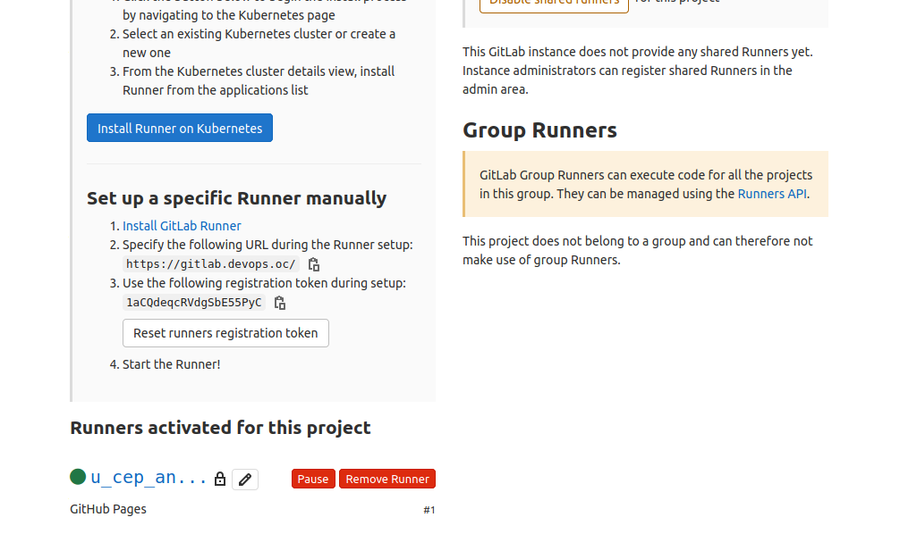

Projet 04 - Mon blog freelance
Posted on Fri 11 December 2020 in Accueil
Le projet 3 étant terminé, nous pouvons en commencer un autre! Le but? Créer un site statique qui sera automatiquement géré!
Bon... presque... Faut-il encore écrire les articles en MarkDown...
Table des Matières
- Prérequis
- Installation de Giltab
- Installation de Pelican
- Configurer GitHub Pages
- Chaîne de livraison continue
- Push vers notre repository GitLab
- Verification dans GitHub Pages
- Annexe
Prérequis
Comme à chaque fois, un minimum de prérequis est à respecter! Ici, il faut les bases pour l'utilisation d'un VagrantFile. Pour le reste, une grande partie est automatisé car directement configuré dans le VagrantFile.
Installation de Giltab
Les bases
- Lancer vagrant via la commande
vagrant up - Lorsque l'installation et la configuration de la machine virtuelle est terminée, se connecter en SSH dessus via la commande
vagrant ssh - Une fois sur la VM, on lance juste la commande suivante :
docker-compose up –d. Cette commande utilise donc Docker Compose pour installer Gitlab-ee ainsi que le Gitlab-runner dont nous aurons besoin pour nous chaine de livraison. - Une fois l'installation terminée, il faut attendre un certain temps (environ 15 minutes) car le lancement de l'ensemble des services de GitLab est long. Mais au bout d'un moment, le lien https://gitlab.devops.oc devrait fonctionner!
La configuration du certificat
Grande partie!!! Pas facile d'héberger un site en local... Mais en suivant les étapes suivantes, tout se passera bien :
- Rentrer dans le conteneur gitlab-runner via la commande :
docker exec -ti gitlab-runner bash - Créer le repertoire suivant :
mkdir -p /etc/gitlab-runner/certs - Se placer dans ce repertoire :
cd /etc/gitlab-runner/certs - Créer les clés privés et publiques :
openssl req -x509 -out gitlab.devops.oc.crt -keyout gitlab.devops.oc.key -newkey rsa:2048 -nodes -sha256 -subj '/CN=gitlab.devops.oc' -extensions EXT -config <( printf "[dn]\nCN=gitlab.devops.oc\n[req]\ndistinguished_name = dn\n[EXT]\nsubjectAltName=DNS:gitlab.devops.oc\nkeyUsage=digitalSignature\nextendedKeyUsage=serverAuth")
- Sortir du conteneur puis sur la VM lancer les commandes suivantes :
vagrant@devops:~$ cd /srv/gitlab-runner/config/certs/
vagrant@devops:/srv/gitlab-runner/config/certs$ sudo cp -a gitlab.devops.oc.* /srv/gitlab/config/ssl/
vagrant@devops:/srv/gitlab-runner/config/certs$ sudo vim /srv/gitlab/config/gitlab.rb
- Ajouter à la fin du fichier gitlab.rb la commande suivante :
registry_external_url 'https://gitlab.devops.oc' - Allons dans le conteneur gitlab-ee :
docker exec -ti gitlab-ee bash - Puis nous lançons une reconfiguration :
gitlab-ctl reconfigure
Installation du runner
Une fois la partie précédent réalsiée, nous relançons le runner en ajoutant un agent :
vagrant@devops:/srv/gitlab-runner/config/certs$ docker exec -ti gitlab-runner bash
root@00de709eafcf:/# gitlab-runner restart
root@00de709eafcf:/# gitlab-runner register
Runtime platform arch=amd64 os=linux pid=123 revision=8fa89735 version=13.6.0
Running in system-mode.
Enter the GitLab instance URL (for example, https://gitlab.com/): https://gitlab.devops.oc/
Enter the registration token: 1aCQdeqcRVdgSbE55PyC
Enter a description for the runner:
[00de709eafcf]: GitHub Pages
Enter tags for the runner (comma-separated):
Registering runner... succeeded runner=1aCQdeqc
Enter an executor: docker, docker-ssh, shell, ssh, docker+machine, custom, virtualbox, docker-ssh+machine, kubernetes, parallels:
docker
Enter the default Docker image (for example, ruby:2.6):
docker:stable
Runner registered successfully.
Nous pouvons voir le résultat directement sur notre site GitLab dans les paramètres CI/CD, Section "Runner"

Installation de Pelican
- Lancer la VM via la commande
vagrant ssh - Une fois sur la VM, on active l'environnement virtuel de pelican via la commande
activateenv - Puis nous generons la configuration de notre site via l’outils quickstart de Pelican :
pelican-quickstart - Nous renseignons les différents champs :
(pelican) vagrant@devops:~/virtualenvs/pelican/freelanceBlog$ pelican-quickstart
This script will help you create a new Pelican-based website.
Please answer the following questions so this script can generate the files needed by Pelican.
> Where do you want to create your new web site? [.]
> What will be the title of this web site? Mon Blog Freelance
> Who will be the author of this web site? Seb
> What will be the default language of this web site? [fr]
> Do you want to specify a URL prefix? e.g., https://example.com (Y/n)
> What is your URL prefix? (see above example; no trailing slash) http://pelican.devops.oc
> Do you want to enable article pagination? (Y/n)
> How many articles per page do you want? [10]
> What is your time zone? [Europe/Paris]
> Do you want to generate a tasks.py/Makefile to automate generation and publishing? (Y/n)
> Do you want to upload your website using FTP? (y/N)
> Do you want to upload your website using SSH? (y/N)
> Do you want to upload your website using Dropbox? (y/N)
> Do you want to upload your website using S3? (y/N)
> Do you want to upload your website using Rackspace Cloud Files? (y/N)
> Do you want to upload your website using GitHub Pages? (y/N)
Done. Your new project is available at /home/vagrant/virtualenvs/pelican/freelanceBlog
- Puis nous lançons notre site :
pelican --autoreload -b 192.168.33.10 --listen - Enfin, on peut le lancer :
http://pelican.devops.oc:8000/ - Pour le reste, il suffit de rédiger vos articles en MarkDown dans le repertoire content
- Nous pouvons ensuite parametrer notre GitHub Pages
Configurer GitHub Pages
Avant de mettre en place la chaine de livraison, nous allons configurer GitHub afin de pouvoir utiliser un nouveau repository en tant que "Blog"
Pour celà, rien de bien compliquer :
- Se connecter sur son compte GitHub
- Créer un nouveau projet que nous appelerons "Blog"
- Allez dans les paramètres de la repository et allez dans la section "GitHub Pages"
- Choisir une branche ainsi qu'un repertoire sur lequel le site pointera
- Sauvegarder
La chaîne de livraison continue
Le fichier .gitlab-ci.yml
C'est grâce à ce fichier intitulé ".gitlab-ci.yml" que la CI/CD sur GitLab peut fonctionner. Ce fichier doit être placé à la racine du projet. C'est ici que nous définirons notre pipeline.
Penser par contre à suivre la procédure décrite sur gitlab pour pouvoir pusher via une clé ssh sur GitHub à savoir :
- Recupèrer la clé privé de notre VM que nous plaçons dans une variable GitLab
- Copier la clé publique dans GitHub
Visualiser la chaîne
La chaîne de deploiement est visible dans le menu "CI/CD", partie "Pipelines". Dans notre cas, seul deux jobs seront executés et donc visible dans GitLab. - Un job qui nous permettra de tester que l'application Pelican parvient à generer les fichier html par rapport aux Articles en MarkDown que nous avons rédigé. - Un jod de déploiement qui nous permettra de pousser tous les fichiers html dont GitHub Pages à besoin pour fonctionner sur la bonne branche.

Push vers notre repository GitLab
Tout d'abord, sur notre VM, nous allons créer notre clé SSH afin de pouvoir l'interconnecter avec GitLab. Pour celà :
vagrant@devops:~/virtualenvs/pelican/freelanceBlog$ ssh-keygen -t rsa -b 4096 -C "Seb"
Generating public/private rsa key pair.
Enter file in which to save the key (/home/vagrant/.ssh/id_rsa):
Enter passphrase (empty for no passphrase):
Enter same passphrase again:
Your identification has been saved in /home/vagrant/.ssh/id_rsa.
Your public key has been saved in /home/vagrant/.ssh/id_rsa.pub.
The key fingerprint is:
SHA256:V1Lnvze2GRM1waYUvI4V/mu4v8kD4D11f9LV7RRVCjQ Seb
Etant donné que nous avons fait une redirection du port SSH dans notre conteneur, il faut le faire comprendre à SSH.
Pour cela, on crée le fichier ~/.ssh/config et on y renseigne les informations suivantes :
Host gitlab.devops.oc
Hostname gitlab.devops.oc
PreferredAuthentications publickey
IdentityFile ~/.ssh/id_rsa
Port 5822
Ensuite, nous ajoutons notre clé public dans GitLab. Quand cela est fait, nous pouvons réaliser le remote sur notre repository et pousser les fichiers que nous souhaitons (penser préalablement au .gitignore)
Vérification dans GitHub Pages
Il suffit de se rendre sur la page https://ricky1981.github.io/blog/ (mais normalement on y est déjà car nous sommes en train de lire l'article...)
Annexe
Pelican
Image
Si vous souhaitez mettre des images dans vos articles, voici la procédure à suivre :
- Créer un dossier images dans le dossier content :
mkdir -p ~/virtualenvs/pelican/freelanceBlog/content/images - Ajouter une ligne de configuration dans le fichier pelicanconf.py . Cette ligne sera STATIC_PATHS = ['images'] .
- Utiliser la syntaxe suivante pour insérer l’image
 .
. - Pour le transfert de l'image entre la machine locale et la VM, la commande
vagrant scppeut être utilisée.
Thèmes
- mkdir -p ~/virtualenvs/pelican/pelicanThemes
- git clone --recursive https://github.com/alexandrevicenzi/Flex.git
- cd ~/virtualenvs/pelican/pelicanThemes/pelican-themes/
- pelican-themes -vi Flex
- pelican-themes -v -l --> pour voir les thèmes installés
- Et on edite le fichier pelicanconf.py pour rajouter le theme :
#!/usr/bin/env python
# -*- coding: utf-8 -*- #
AUTHOR = 'Seb'
SITENAME = 'Mon Blog Freelance'
SITEURL = 'https://ricky1981.github.io/blog/'
PATH = 'content'
TIMEZONE = 'Europe/Paris'
DEFAULT_LANG = 'fr'
STATIC_PATHS = ['imagesperso']
THEME = 'Flex'
# Feed generation is usually not desired when developing
FEED_ALL_ATOM = None
CATEGORY_FEED_ATOM = None
TRANSLATION_FEED_ATOM = None
AUTHOR_FEED_ATOM = None
AUTHOR_FEED_RSS = None
# Blogroll
LINKS = (('Pelican', 'https://getpelican.com/'),
('GitLab Docker', 'https://docs.gitlab.com/omnibus/docker/'),
('Projet 04', 'https://openclassrooms.com/fr/paths/100/projects/447/assignment'),)
# Social widget
SOCIAL = (('Linkedin', 'https://www.linkedin.com/in/sebastien-rykala-7767b81ba/'),)
DEFAULT_PAGINATION = 10
- Pour éviter un problème avec l'image du site (Logo OC me concernant), remplacer directement l'image dans /home/vagrant/.local/lib/python3.7/site-packages/pelican/themes/Flex/static/img/profile.png avant de faire un commit.